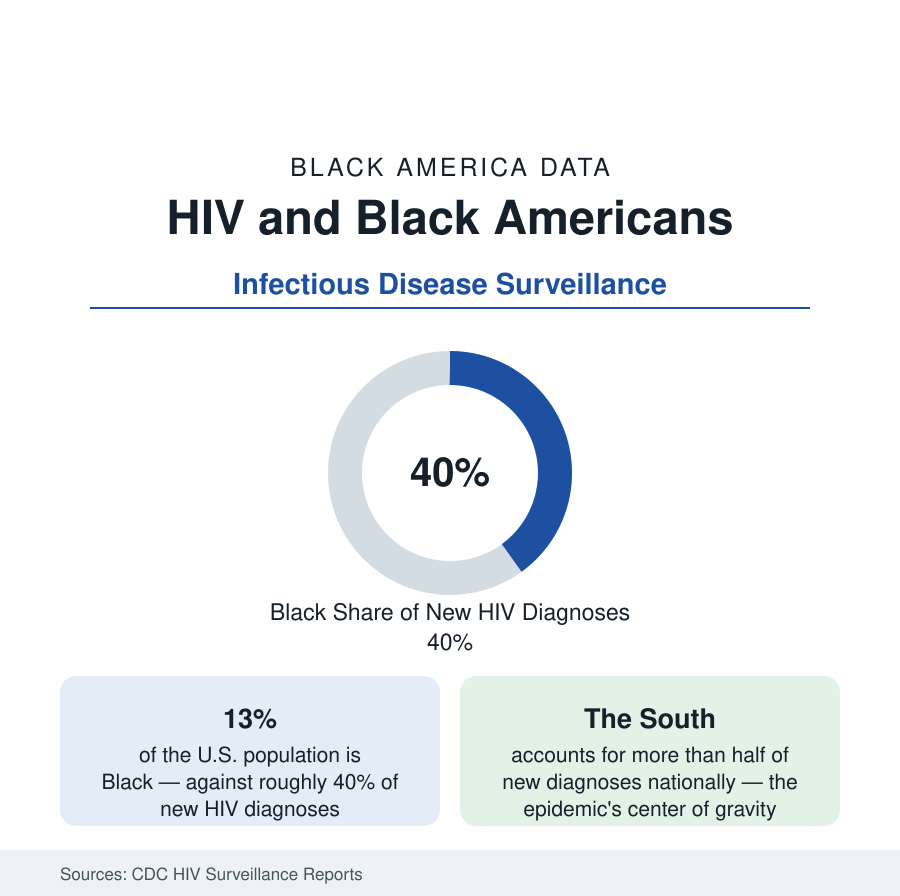

Black Public Health
HIV in Black America: The Epidemiology Data
Black Americans account for roughly 40 percent of new HIV diagnoses at about 13 percent of the population — with the South carrying the majority of cases. The CDC surveillance profile.

Black Americans account for roughly 40 percent of new HIV diagnoses in the United States while forming about 13 percent of the population — the widest proportional disparity in the CDC's surveillance of a major infectious disease — and for a similar share of the roughly 1.2 million Americans living with HIV. The epidemic's center of gravity is the South, its trend lines have improved substantially across the treatment era, and its remaining concentration is the subject of a standing federal initiative. This article reports the surveillance data.
The Distribution: Region, Sex, and Transmission
The surveillance tables stratify the disparity precisely. Regionally, the South — home to the largest share of Black America — records more than half of all new diagnoses nationally, with rates in the Deep South states the highest in the system. By sex, Black men account for the largest share of Black diagnoses, with transmission concentrated among men who have sex with men, the network pattern the surveillance categories record; Black women form a far larger share of women's diagnoses than their population share — roughly 55 to 60 percent of new diagnoses among women — with heterosexual transmission the predominant recorded route, a distribution unlike any other group's. Age concentrates diagnoses in the 25-to-34 band, with the youth share (13 to 24) notably higher among Black diagnoses than the national pattern — the surveillance fact behind the prevention literature's emphasis on testing access and early linkage.
The Care Continuum
The CDC's care-continuum data measure the system after diagnosis: the shares of people living with HIV who are diagnosed, linked to care, retained, and virally suppressed. Black Americans record lower percentages at each stage in the national tables — viral suppression among Black people living with diagnosed HIV runs several points below the national figure — and the gaps compose: a population with higher incidence and lower suppression sustains higher community transmission in the models regardless of individual behavior differences, which the behavioral surveillance data notably fail to find at magnitudes that would explain the incidence gap. The disparities, in the literature's standard reading, are structural in mechanism — testing access, care access, insurance, stigma within care settings, and network prevalence — a reading the data support at each measured stage.
Progress and the Treatment Era
The trend lines are genuinely favorable and must be quoted with the levels. New diagnoses among Black Americans have declined substantially from their peaks — the annual count is down by roughly a quarter to a third from a decade earlier in the recent surveillance, with the steepest declines among Black women (whose diagnoses have fallen by more than half from their early-2000s levels) — driven by treatment-as-prevention (suppressed virus is untransmittable, a finding the surveillance era is built on), expanded testing, and, increasingly, pre-exposure prophylaxis. PrEP's own uptake data carry the disparity forward, however: Black Americans form a large share of the population with indications for PrEP and a much smaller share — roughly an eighth to a seventh in recent pharmacy-data analyses — of its users, the prevention system's edition of the access pattern.
The Federal Response and Its Metrics
The Ending the HIV Epidemic initiative, the standing federal program, targets the jurisdictions — disproportionately Southern counties and cities with large Black populations — that account for the majority of new diagnoses, funding testing, treatment linkage, and PrEP access against published reduction goals. Its jurisdiction list is, in effect, a map of this article: the Georgia, Florida, Texas, Louisiana, and Carolina metros and counties of the census section, plus the older epidemic centers of the Northeast and Midwest. Mortality data close the surveillance picture: HIV remains a leading cause of death for Black Americans in the younger adult age bands in the vital statistics, at rates several times the national figure, even as the treatment era has demoted it from the top causes overall.
Reading the HIV Data
The surveillance system's discipline is to report rates, stages, and trends without compressing them into a single verdict, and this article follows it: a disparity of roughly three-to-one in incidence, improving trend lines in nearly every series, a care continuum leaking at every stage, and a prevention tool reaching the affected population last. All four statements are in the CDC's tables, and the profile is the four together.
More in Black Public Health
Hypertension Among Black Adults: Prevalence, Control, and Consequences
About 55 percent of Black adults have hypertension — the highest rate of any U.S. group. Prevalence, onset, control, and the stroke, heart, and kidney consequences in the data.
Diabetes Among Black Adults: Prevalence and Complications
Nearly one in five Black adults has diabetes, diagnosed or undiagnosed — and its complications fall with particular weight. The CDC data on prevalence, control, and outcomes.
Black Life Expectancy: The Gap at Birth and Its Causes
Black life expectancy at birth is about 73 years, roughly five years below the national figure — the summary measure of every health gap in this section. The CDC data.
Source: Centers for Disease Control and Prevention, HIV Surveillance Reports and AtlasPlus; Kaiser Family Foundation HIV analyses.